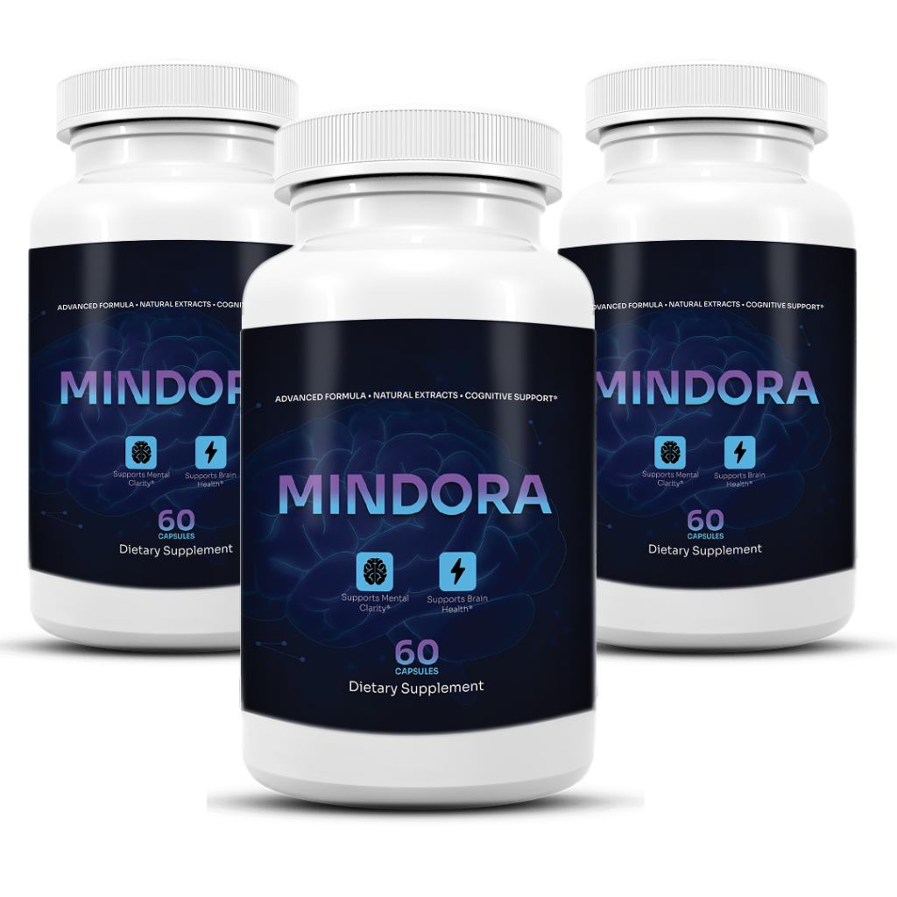

MINDORA supplement bottles
MINDORA is a daily dietary supplement formulated to support mental clarity, focus, and overall brain health using a targeted blend of branched chain amino acids, adaptogenic herbs, and nootropic plant extracts.
The formula is built on the understanding that cognitive performance isn't just about one ingredient — it's about supporting energy metabolism, stress response, and neurotransmitter balance together. By addressing these interconnected systems, MINDORA takes a more complete approach to brain support than supplements focused on a single mechanism.
MINDORA is designed to support sustained mental energy, reduce the mental fatigue linked to long workdays, and provide key amino acids and adaptogens that support healthy cognitive function throughout the day.
Rather than relying on high-stimulant blends or synthetic compounds, MINDORA takes a natural, plant-forward approach that works gradually alongside the body's own systems, making it suitable for adults who want consistent daily support without disruptive jitters.
Many users turn to MINDORA because they want to address mental fog and sluggish focus while also supporting long-term brain health — recognizing that these two areas of wellness are deeply connected and benefit from being supported together.
From a practical standpoint, MINDORA is designed to be simple to take every day, fitting into a morning or daytime routine and providing the body with consistent nutritional support for mental clarity and focus.
MINDORA is formulated with a blend of amino acids, adaptogenic herbs, and nootropic extracts specifically chosen for their roles in supporting mental clarity, focus, and brain health.
Branched Chain Amino Acids (L-Leucine, L-Isoleucine, L-Valine) — A foundational trio of amino acids included to support energy metabolism and reduce mental fatigue during periods of sustained focus or physical exertion.
Bacopa Monnieri Extract — A well-studied nootropic herb included to support memory consolidation, cognitive function, and healthy neuronal communication, addressing the cognitive dimension of the MINDORA formula.
Rhodiola Rosea Root Powder (3% Salidroside) — An adaptogenic root traditionally used to help the body adapt to stress and support steady mental energy without a stimulant-driven crash.
L-Theanine — An amino acid included to promote calm, focused attention and help offset the jittery feeling sometimes associated with mental exertion or caffeine intake.
Panax Ginseng Extract — A traditional adaptogen included to support mental alertness and healthy energy metabolism, rounding out the formula's focus on sustained, balanced cognitive support.
Together, these ingredients form a dual-action formula targeting both energy metabolism and cognitive support, designed to work best when used consistently as part of a daily wellness routine.
MINDORA is formulated for adults seeking natural, non-prescription support for mental clarity and cognitive wellness, particularly those experiencing mental fatigue, brain fog, or age-related focus challenges.
The ingredients in MINDORA are generally drawn from well-recognized amino acid, herbal, and nutritional sources used in both nootropic and adaptogenic supplements, and most users take the formula without significant adverse effects when used as directed.
Some individuals, particularly those new to amino acid or adaptogen-based supplements, may notice mild, temporary digestive changes — such as loose stools or mild stomach discomfort — during the first few days as the body adjusts.
MINDORA is not intended to diagnose, treat, cure, or prevent any disease. These statements have not been evaluated by the Food and Drug Administration. Always consult a qualified healthcare provider before starting any new supplement.
MINDORA is designed as a straightforward daily supplement that integrates easily into a morning or daytime routine, delivering consistent nutritional support for mental clarity and cognitive health.
The suggested use is two capsules daily with an 8 oz. glass of water, ideally 20-30 minutes before a meal with 8 oz of water or as directed by your healthcare professional, to support absorption and minimize digestive discomfort.
For best results, consistency is essential. MINDORA works gradually — with amino acid ingredients supporting energy metabolism quickly, and adaptogenic ingredients like Rhodiola and Bacopa showing the most benefit after 4-8 weeks of daily use.
Most users are encouraged to use MINDORA consistently for at least 60-90 days before making a final evaluation, as both mental clarity and stress resilience improvements are gradual and cumulative.
Do not exceed the recommended daily serving size. Store MINDORA in a cool, dry place away from direct sunlight and keep the bottle tightly sealed when not in use.
MINDORA is sold through its official website and approved affiliate channels, and most purchases are backed by a satisfaction guarantee that gives new customers the opportunity to try the product with reduced financial risk.
Within the guarantee window, customers who feel that MINDORA has not met their expectations can request a refund by contacting customer support and following the return instructions provided at the time of purchase.
The exact length of the money-back guarantee and return conditions are outlined on the official checkout page, so reviewing the terms before purchasing is always recommended.
Purchasing through the official MINDORA page or a trusted affiliate link ensures full access to the guarantee, legitimate customer support, and correct handling of any billing or return needs.
Third-party or unauthorized sellers may not honor the same protections, so avoid purchasing MINDORA from unverified marketplaces or resellers.
"My afternoons used to feel like wading through fog. A few weeks into MINDORA and I'm finishing the workday with energy left over. I'm thinking more clearly and my cravings for another coffee have noticeably calmed down."
✔ Verified Purchaser - 2 Months"I liked that MINDORA combines amino acids with brain support ingredients — I'd been looking for something that addressed both because I knew we were connected for me. After lagged afternoons, that disappeared almost completely."
✔ Verified Purchaser - 6 Weeks"Three months in and MINDORA has become a non-negotiable part of my morning. I feel more mentally present, my mind feels more stable throughout the day, and I've lost a few pounds without dramatically changing my diet. It's exactly the kind of supplement I was looking for — natural, comprehensive, and actually effective."
✔ Verified Purchaser - 3 MonthsIf you're considering MINDORA, purchasing from the right source is essential to ensure you receive the authentic formula, official guarantee, and proper customer support.
MINDORA is not widely available through general retail stores or large open marketplaces. Most legitimate offers are hosted on the official website or approved affiliate pages.
Your safest option: follow the official MINDORA link, review the offer details on the checkout page, and complete your order there to ensure you receive the authentic product with full protections.
Most customers avoid third-party listings and order MINDORA only through the official website for peace of mind.
With so many supplements available online, healthy skepticism about MINDORA is understandable. The good news is that MINDORA is a legitimate, science-informed supplement built around credible ingredients with well-established roles in both amino acid and nootropic research.
The formula draws on extensively studied compounds like branched chain amino acids, bacopa monnieri, rhodiola rosea, and panax ginseng — ingredients that appear regularly in peer-reviewed research on cognitive function, stress adaptation, and mental energy.
User experiences vary, as with any supplement. Some report meaningful improvements in mental clarity, sustained focus, and overall energy after consistent use, while others note more gradual changes — consistent with how nootropic and adaptogenic supplements typically work over time.
Approached as a daily cognitive-support tool rather than a quick fix, MINDORA can be evaluated fairly over several months — and the guarantee window makes that trial financially low-risk.
The bottom line: MINDORA is a genuine, thoughtfully formulated supplement designed to support both mental clarity and energy through natural ingredients. It's not a scam — but it rewards consistency and realistic expectations.
Always review the full ingredient list, usage terms, and guarantee details on the official MINDORA page before deciding.
Always review the full Supplement Facts panel before use.
This page is an independent product review and may contain affiliate links. If you make a purchase through one of these links, we may earn a commission at no additional cost to you.
The statements made on this page have not been evaluated by the Food and Drug Administration. This product is not intended to diagnose, treat, cure, or prevent any disease. Individual results may vary. Always consult a qualified healthcare provider before starting any new supplement, especially if you are pregnant, nursing, taking medication, or have a known medical condition. This is not the official MINDORA website.